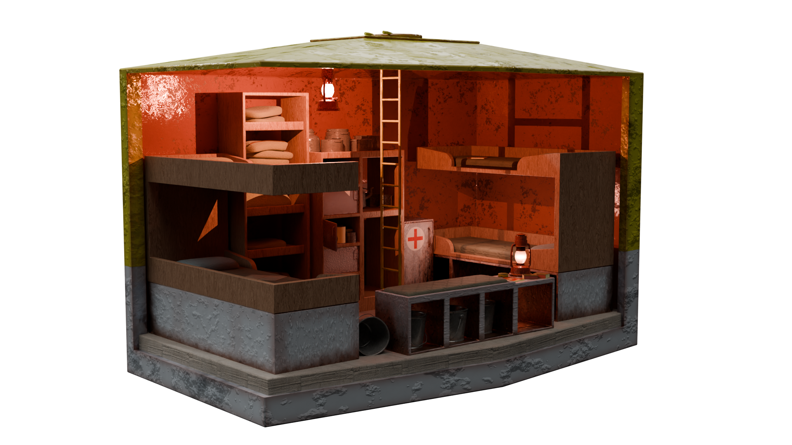
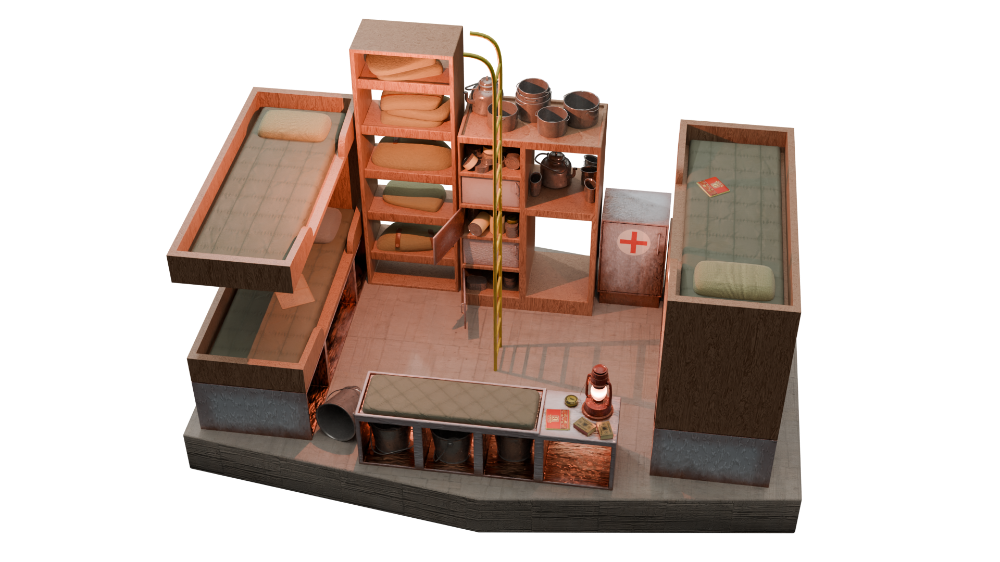
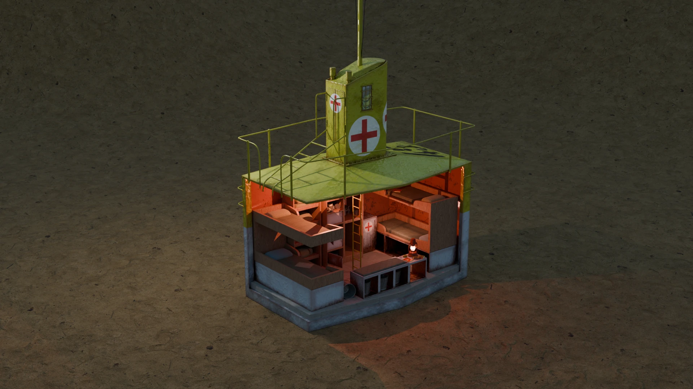
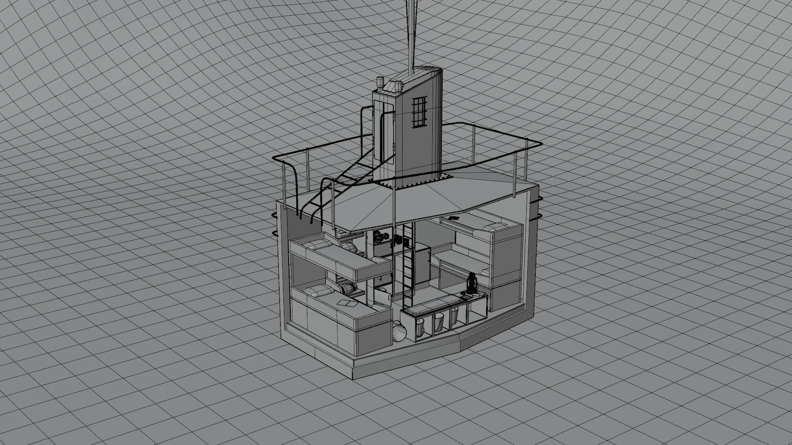

A truly self-contained space recreated as convincingly as possible - for an historical artifact that no longer exists - through the interpretation of various sources: photographic, secondary diagrams, and other 3D models. Some artistic liberty has of course been taken in its recreation.

This tiny shelter is rife with details alluding to larger events having or have-yet to unfold; it's these small elements that I absolutely love thinking about while atttempting environmental storytelling. Though spartan in space-alottment and general comfort, as a survival shelter is generally want, the space is no less stocked with the barest of essentials for spending a night or two.

The stenciled numbers visible on some renders are created by user zolee from onlygfx while the variously scattered rations and tins are textured from photographs of seemingly surviving period examples, posted by users VolksJager and Glenn66 on the War Relics Forum. Other miscellaneous textures - such as the concrete ballast floor and a loose document - courtesy of textures.com. Finally, the sane texture present below as well as the HDRI's used courtesy of Poly Haven.

